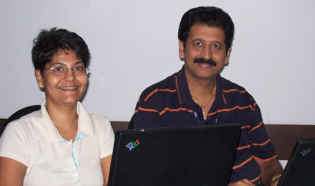

Our Chief Correspondent, Lalita Bhalerao, quizzing one of our senior leaders, Nagesh Belur, on his leaving IBM.
After taking over at the helm of the FSS Team, you set out to give it a direction. Thanks to your insight and spirit, you succeeded in instating a positive environment. Your sense of discernment led you to detect among us those with good predisposition and channeled them into an efficient team.
As you depart from IBM with the impression of not having totally accomplished your vision, we firmly believe that you will be with us as we’ve benefited from your enormous experience.
Kabhi Alvida Na Kehna…
Q. First of all do tell us what prompted you to desert all of us in FSS?
A. Life is a journey, we are all co-passengers, the destination of each of us would be different, some of us alight in between and reach the destination and some of us will alight to get on board another train for further travel. I have done my bit of service to the FSS in these two and half years and I am now moving on to take new challenges and explore new areas. I am not deserting any of you including IBM. All of you will definitely stay in my heart and memory and I shall cherish every moment spent here. I hope the effort I have put would help the IBM grow FSS business and thus provide growth opportunities to each one of you.
Q. I beg your pardon for being inquisitive, but I am keen to know, with your versatile profile, what kind of role would you be portraying in your new endeavour?
A. That is something that I cannot disclose at this stage. However, I am going to continue in my core strength area and take newer challenges to grow competencies and businesses.
Q. How do you manage to have such a phenomenal memory, which contributes to your excellent people management skills, and makes you the favorite manager?
A. It is all in what you believe is right and what you are as a person. If you relate yourself well to people there is always reciprocity from the other side. Normally people think that they manage others that is how this “People Manager” is coined. I do not believe in this coinage as well as the feeling that it generates. I would rather call it more as “People Facilitator”. I have not done anything in particular to any individual other than facilitating him/her to realize the potential within and set direction for growth and put efforts for growth both as an individual and as a professional in organization. I have never been a Manager nor do I have belief in being a Manager. At least as far as people relationships are concerned, be friend, a mentor, a guide and a facilitator with complete professionalism and true intent towards people.
Q. Could you share with us something of your experience in IBM? An anecdotal garnish will be very welcome.
A. My experience with IBM has been wonderful and fulfilling. I am happy that I have achieved what I set myself as Goal. I am happy to see that today my own predictions on Core Banking area has come true in the global environment. I take pride in two things- Globally every Core Banking deal that happens touches GD, Globally only GD has the Industry skills in FSS that is unmatched anywhere else. This is something I will take away from here as my fond memories of career.
I have also left some legacy behind- I am sure some would like it, some would hate it but I can tell you that everyone would love to emulate it.
Q. I’m sure having worked in an influential position with IBM you must’ve formed some opinion about IBM and its work processes; can you share your opinion with us and rate it on a scale 1-10?
A. Not now not any more!!
Q. If there was one thing you could change about IBM what would it be?
A. I have already done that – I have removed myself you see; don’t you think it is a really big change?? If not, what else more I can do??
Q. Every organization has its own work culture which is entirely different from the others, what is that one thing in your opinion which is different in IBM’s work culture that sets it apart from the others?
A. No second place is like IBM. It is just like India – Unity in diversity. You have freedom you have process rigidity, you have employee friendly environment you have high level of pressure and expectations. It is up to each one of us to see if we want to be only diverse or create a unity amongst all within this diverse environment. It is really complex, but not impossible. It is healthy and challenging.
Q. What is your take away from your tenure with IBM that you’ll certainly practice it wherever you are and whatever work place you’ll be in the future?
A. I have already answered this.
Q. Please give us your personal recipe for success and a farewell message for all of us here in FSS.
A. Do something different that can add value to yourself and the company, Believe in yourself and your action, Be steadfast against any pressure to the contrary and be committed to your beliefs and values, Prove yourself even if late at times by actual results that speak for themselves.
Last but not least, I am overwhelmed by the feelings being expressed by each one of you on hearing about my departure from here. It has been a painful decision for me too. However, the journey goes on. I wish all of you a very successful and bright future in IBM and wish IBM great success.
“Mehafil se ham ja rahe hai, kabhi yaad aaye to mat rona,
Sambhalo iss dil ko, aur suno mere awaaz, aap ke andar se aa rahee hai,
Hum yahin hai, bahut door nahin, sirf aap ka haath badha dena.”
|